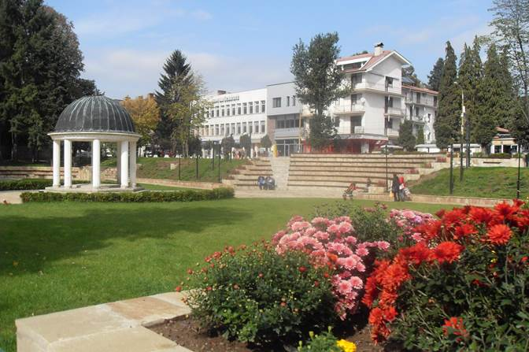
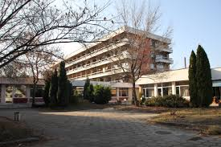

|  | Балнеотуризмът е свързан повече със лечението на хронични заболявания или травми като например: артрит, кожни заболявания и фибромиалгия. България е претрупана със Такива балнеолечебни центрове и заведения, във много градове, като Банкя, Велинград, Бургас, Гоце Делчев, Девин, Кюстендил, Михалково, Павел Баня, Панчарево, Полски Тръмбеж, Сапарева баня, Сандански, Стара Загора и много други. Банкя, известен град, в близост до столицата, е прекрасно място за такава ваканция, с цел отдих, почивка и лечение. Вижте едно предложение, къде да отседнете във Минералния град. |
|  | Нашият хотел предлага удобство и комфорт на достъни за вас цени! Разполагаме с двойни, тройни стаи и апартамнети, където да си починете от ежедневните задачи. Хотелът ни предлага кът за деца, където да можете да оставите вашето отроче за няколко часа и да се насладите на ергенски разходки из града. Повечето хотели забраняват внасянето на животни при тях и вие няма къде да оставите вашия любимец? Ние предлагаме и стая за домашни любимци, където ще се грижим за вашето животинче! Разполагаме и със ресторант, за да може почивката ви да бъде още по пълноценна. И всичко това на достъпни цени. |